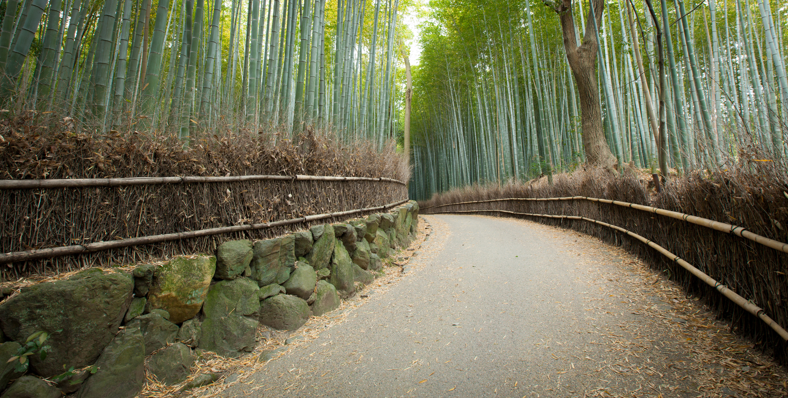
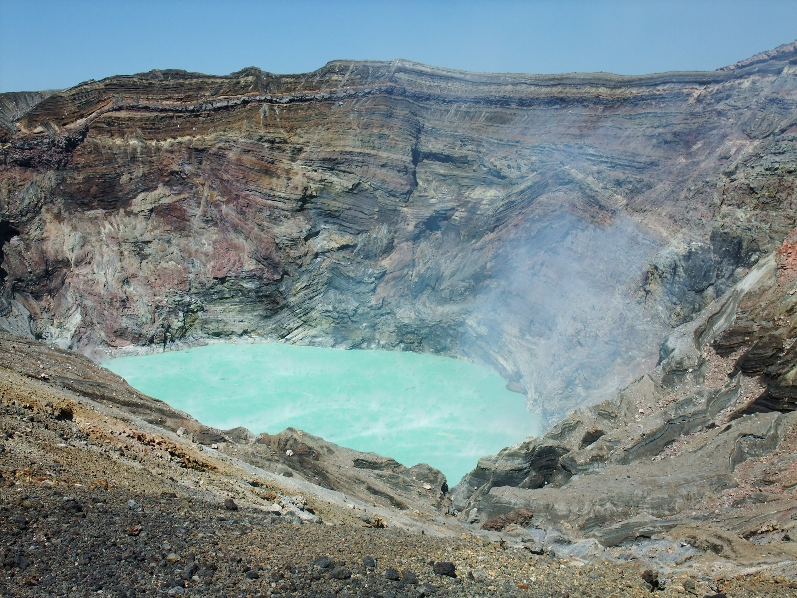
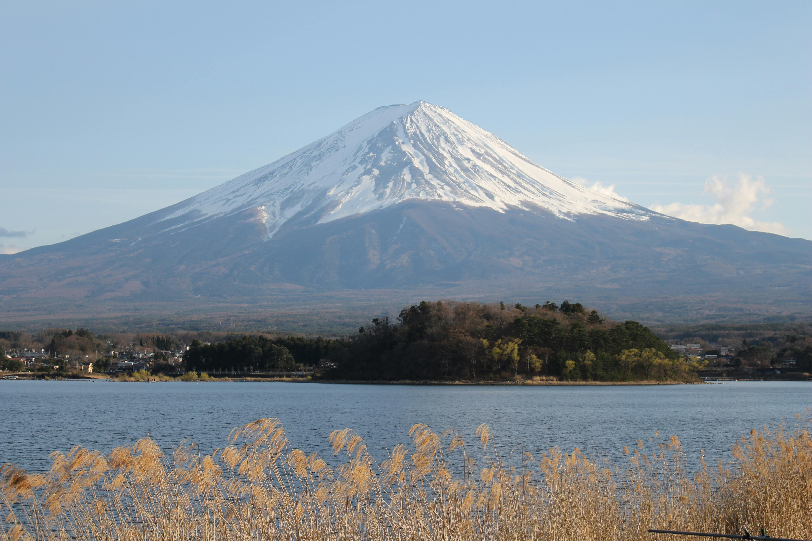
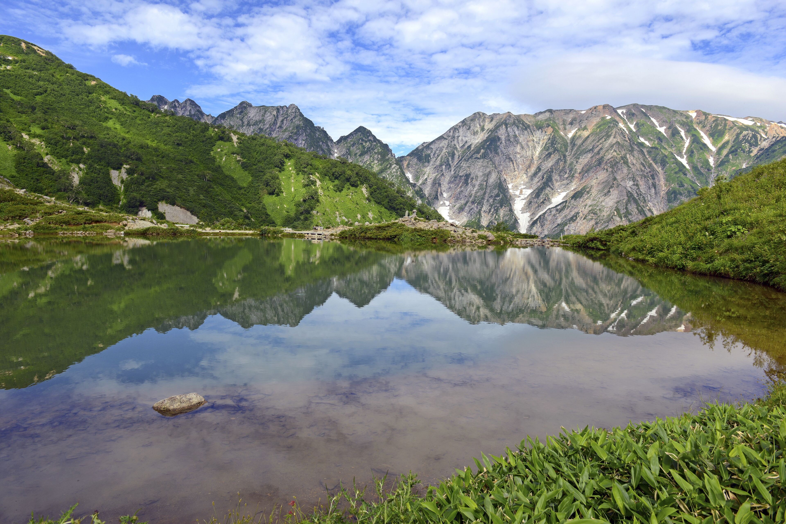
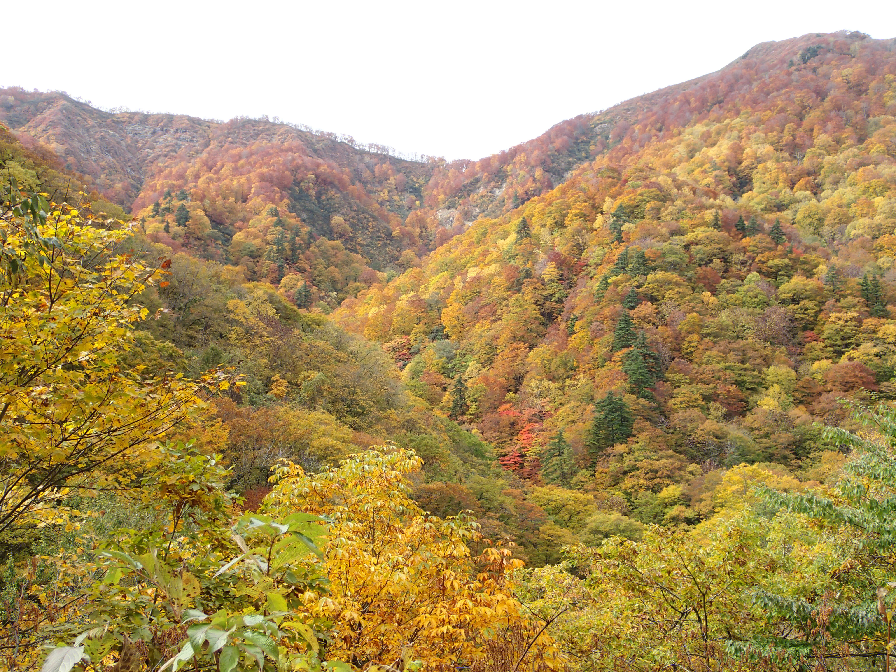
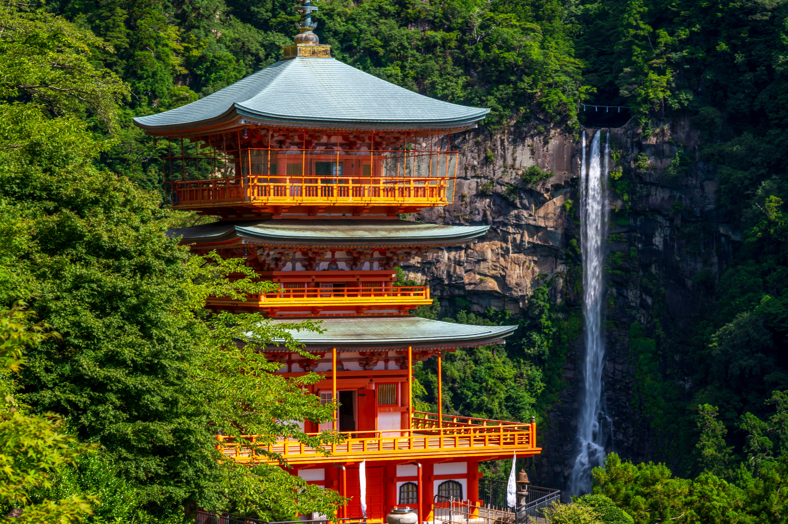
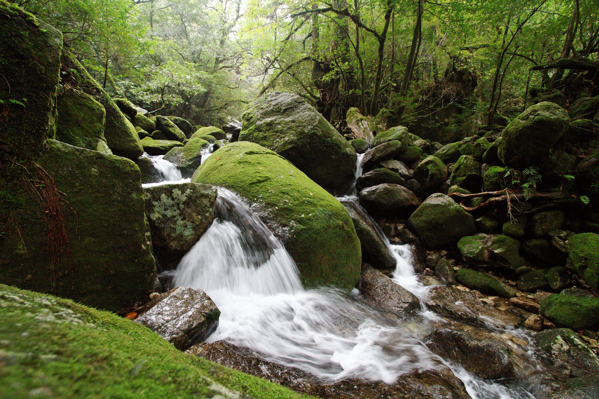
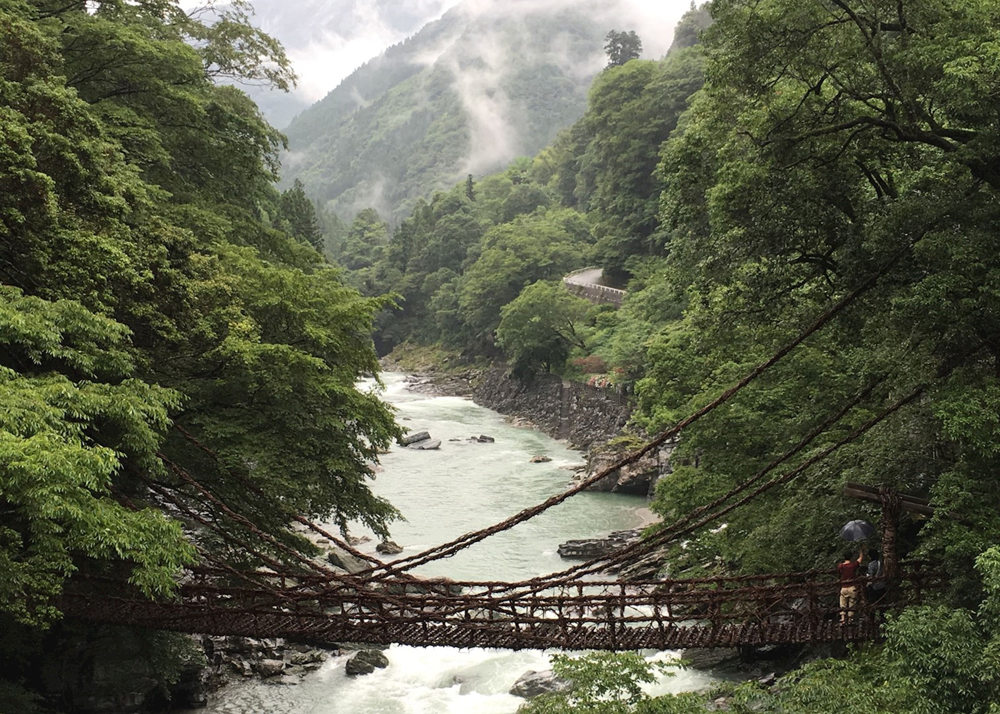
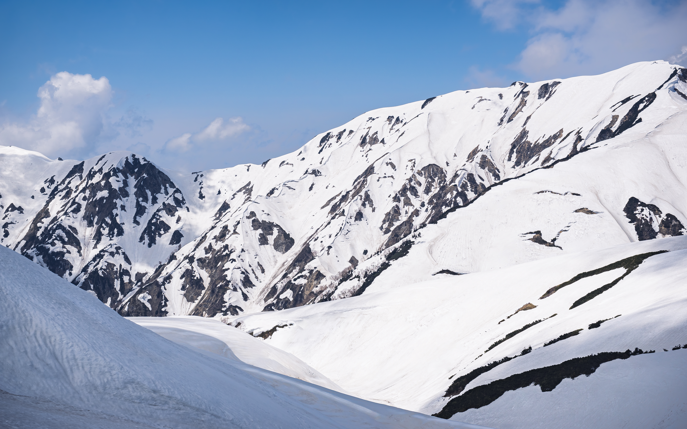
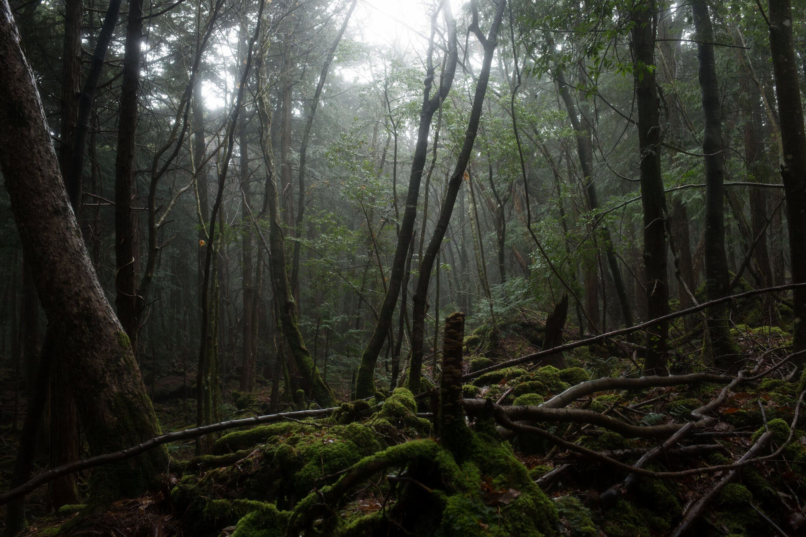

Soaring bamboo stalks sway and whisper in the wind, creating an immersive and otherworldly natural corridor

One of the world’s largest volcanic calderas, offering vast grasslands and steaming craters that feel almost otherworldly

A near-perfect reflection of Japan’s sacred peak rising above calm water, framed by seasonal cherry blossoms or autumn foliage

A pristine alpine valley of crystal-clear rivers, wetlands, and dramatic peaks that feels untouched and remote

An ancient, UNESCO-protected wilderness where dense primeval forests and waterfalls create a sense of deep natural isolation

Japan’s tallest waterfall plunging through sacred forest, blending raw natural power with Shinto spirituality

Moss-covered ancient cedars in constant mist give the island a mythical, almost prehistoric atmosphere

A deep, rugged gorge with vine bridges, sheer cliffs, and remote mountain villages suspended above emerald rivers

Towering snow walls lining a mountain road create a surreal, monumental landscape in spring
Welcome to a visual journey through the natural landscapes of Japan — a collection dedicated to quiet moments, seasonal beauty, and the harmony between land and light.
This gallery showcases forests, mountains, coastlines, and countryside scenes captured across Japan. From mist-covered cedar groves and alpine ridges to tranquil lakes and rural paths, each image reflects the subtle atmosphere that defines Japanese nature.
The experience is designed to be calm and immersive. Smooth parallax motion adds depth to every photograph, allowing each scene to unfold naturally as you scroll, without distraction.
Rather than focusing on landmarks, the gallery highlights texture, weather, and mood — the details often noticed only when slowing down.
All images are presented in a fullscreen format to preserve composition and scale, encouraging uninterrupted viewing and exploration.
Seasonal changes, shifting light, and quiet landscapes form the core of this collection, offering a space to pause and appreciate the natural rhythm of Japan.

"This gallery is absolutely stunning! The parallax effect adds such an immersive quality to the images. I found myself scrolling through multiple times just to experience the smooth transitions and beautiful photography."
Sarah Mitchell, Photography Enthusiast
"As a web designer, I'm always looking for inspiration. This gallery perfectly balances aesthetics with functionality. The responsive design works flawlessly on all my devices, and the user experience is simply outstanding."
James Rodriguez, Web Designer
"I've seen many photo galleries online, but none compare to this one. The attention to detail, the smooth animations, and the curated selection of images make this a truly memorable experience. Highly recommended!"
Emily Chen, Creative Director
"The combination of stunning visuals and innovative technology creates something truly special. Each image feels alive with the parallax movement. It's like stepping into the photographs themselves."
Michael Thompson, Nature Photographer
Have a question or want to collaborate? We'd love to hear from you. Fill out the form below and we'll get back to you as soon as possible.